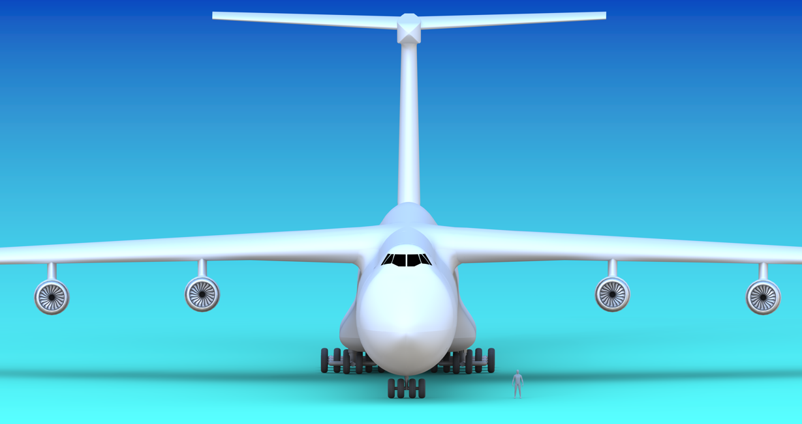

Aircraft design
Outsized Cargo Aircraft
Multidisciplinary aircraft configuration development around an unusual heavy-lift payload and mission.
My contribution
Supported configuration design, geometry development and performance trade-offs while coordinating interfaces across the wider aircraft design.